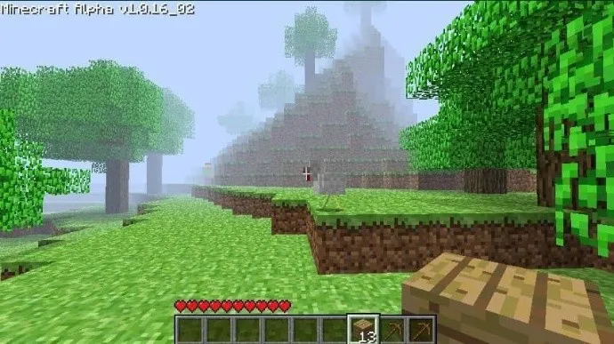

Creepypastas...
Los creepypastas son historias cortas de terror recogidas y compartidas a través de Internet, como en foros, blogs o videos de YouTube, con la intención de asustar o inquietar al lector, cuyos límites entre realidad y ficción permanecen difusos...Wikipedia, nuevamente...
Durante el verano de 2003, los acontecimientos en el noreste de Estados Unidos que involucran una Extraña criatura, parecida a la humana, despertó el interés de los medios de comunicación locales, breve, antes de un apagón aparente fue promulgada. Hay poca información o ninguna, se dejó intacto, como las cuentas más en línea y escritos de la criatura fueron destruidas misteriosamente. Centrada principalmente en la zona rural del estado de Nueva York y una vez que se encuentra en Idaho, auto proclamados testigos contaron historias de sus encuentros con una criatura de origen desconocido. Las emociones van desde niveles extremadamente traumáticos de miedo y malestar, a un sentido casi infantil de la alegría y la curiosidad. Mientras que las versiones publicadas ya no son de la historia, los recuerdos se mantuvieron poderosos. Varios de los involucrados comenzaron a buscar respuestas en ese año. A principios de 2006, la colaboración se había acumulado casi dos docenas de documentos que datan entre el siglo XII y hoy en día, situados en 4 continentes. En casi todos los casos, las historias eran idénticos. He estado en contacto con un miembro de este grupo y fue capaz de obtener algunos extractos de su próximo libro.

Herobrine...
Hace poco, había creado un nuevo mundo para un jugador en Minecraft. Todo era normal al principio, cuando comencé a talar árboles para fabricar una mesa de trabajo. Me di cuenta de que algo se movía entre la densa niebla (tengo un ordenador muy lento, así que tengo que jugar con una pequeña distancia de derizado). Pensé que era una vaca, por lo que le seguí, esperando conseguir un poco de cuero para una armadura. Sin embargo, no era una vaca. Mirando hacia atrás, observé otro personaje con la apariencia predeterminada, pero sus ojos estaban en blanco. No vi ningún nombre de sobre él y revisé dos veces para asegurarme de que no estaba en el modo multijugador. No se quedó mucho tiempo, él me miró y rápidamente corrió hacia la niebla. Le perseguí cuidadosamente por curiosidad, pero ya se había ido. Seguí con el juego, no estoy seguro de qué pensar. Conforme exploraba el mundo, veía cosas que parecían fuera de lugar para lo que un generador de mapas aleatorios podía hacer: túneles de 2x2 en las rocas, pequeñas pirámides perfectas hechas de arena en el océano y un montón de árboles con todas sus hojas cortadas. Me gustaría pensar constantemente que vi al otro "jugador" en la niebla profunda, pero nunca tuve una mejor visión de él. He intentado aumentar mi renderizado de distancia pensando que lo podría ver, pero fue en vano.
Guardé el mapa y fui a los foros para ver si alguien más había encontrado a este pseudojugador. No había nadie. Creé mi propio tema contando acerca del nombre y preguntando si alguien había tenido alguna experiencia similar. El mensaje se eliminó después de cinco minutos. Lo intenté de nuevo y el tema fue suprimido aún más rápido. Recibí un mensaje privado de un usuario con nombre "Herobrine" que contenía una palabra: "Stop it!" ("Estate quieto." en inglés). Cuando fui a ver el perfil de Herobrine, la página era: 404- ERROR. Page not found.
Recibí un correo electrónico de otro usuario del foro que pudo ver el hilo que creé. Me dijo que los moderadores podían leer los mensajes de los usuarios del foro, así que estábamos más seguros utilizando el correo electrónico. En el correo decía que había visto al jugador misterioso también y tenía un pequeño "directorio" de otros usuarios que decían haberlo visto también. Sus mundos estaban llenos de construcciones obviamente hechas por el hombre y se describía a un jugador misterioso que no tenía pupilas.
Cerca de un mes pasó hasta que oí de mi informante de nuevo. Algunas de las personas que habían encontrado al hombre misterioso habían mirado el nombre "Herobrine" y encontraron que el nombre que era utilizado con frecuencia por un jugador sueco. Después de una recopilación de información adicional, se reveló que era el hermano de Notch, el desarrollador del juego. Personalmente envié un mensaje Notch, preguntándole si tenía un hermano. Pasó mucho tiempo, pero él me respondió de vuelta con un mensaje muy corto:
"Lo tenía, pero él ya no está con nosotros." - Notch
Para más inri, más tarde, hace ya un tiempo, Notch publicó un tuit en el que decía: "Herobrine si es real, ya no lo puedo negar, la única forma de evitarlo es ignorándolo..."
